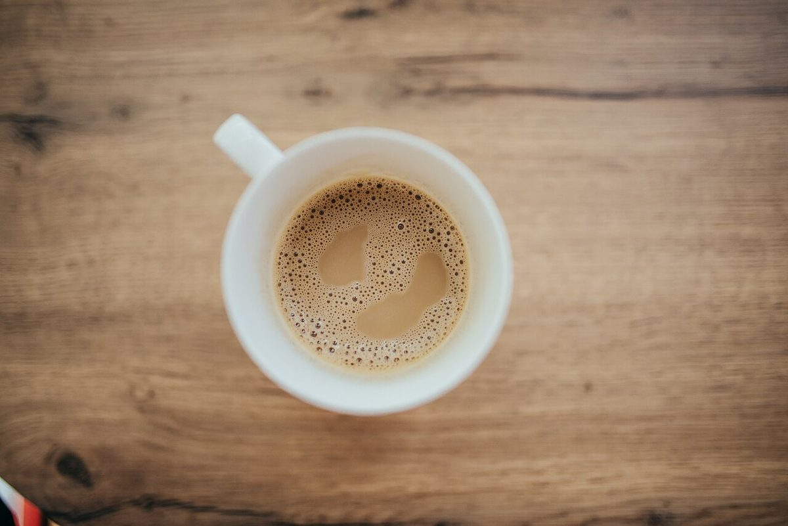
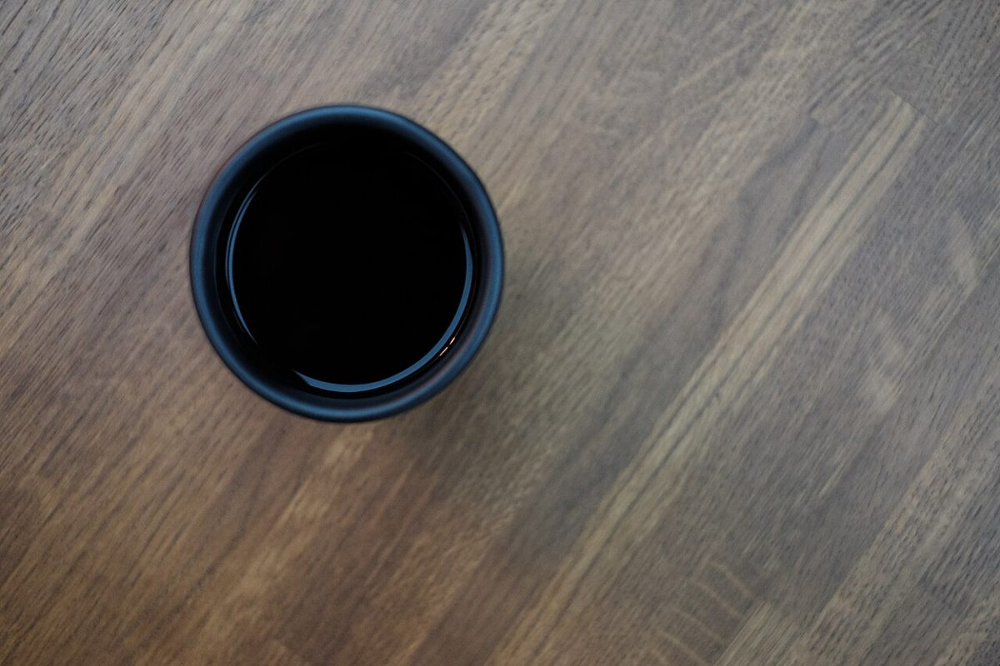

口コミ
こんな声があるかもしれない
店名と業種から自然に想像できる気持ちを、制作側が創作したものです。
以下は制作側が考えた創作のイメージ例で、実在のお客様の投稿ではありません。実際の口コミ・評価とは関係ありません。
いつか行ってみたいお店です。まずはInstagramをのぞいてみたいと思います。
営業時間などが分かったら、行ってみたいです。それまでは、Instagramの更新を楽しみにしています。
屋号に珈琲とあるので、いつか訪ねてみたいです。メニューが公開されるのを楽しみにしています。

